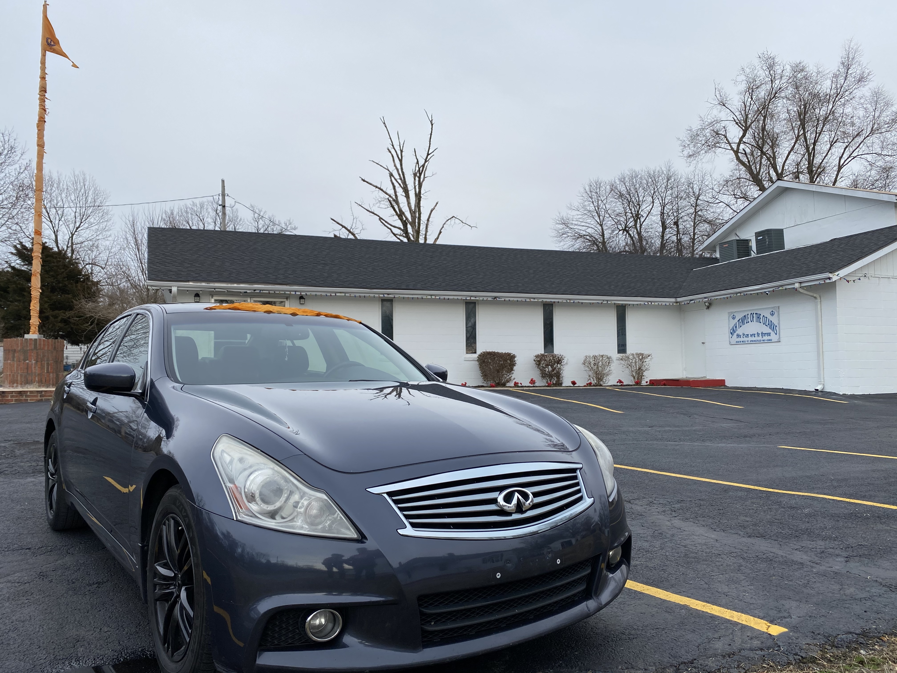

- 

Sahej enjoys a wide range of hobbies. He is most passionate about cars. Since the age of 4, Sahej has adored being around cars and has fantasized about owning and working on cars. As a child, he would often want to buy remote-controlled cars to play with. Currently, he enjoys doing minor repair work on his Infinity G37xs that he recently bought as his first car. He also regularly enjoys working out but most recently has found a new hobby. Sahej has joined the MSU swing team which he enjoys very much. He is learning new dance moves every week and can't wait to impress the ladies.